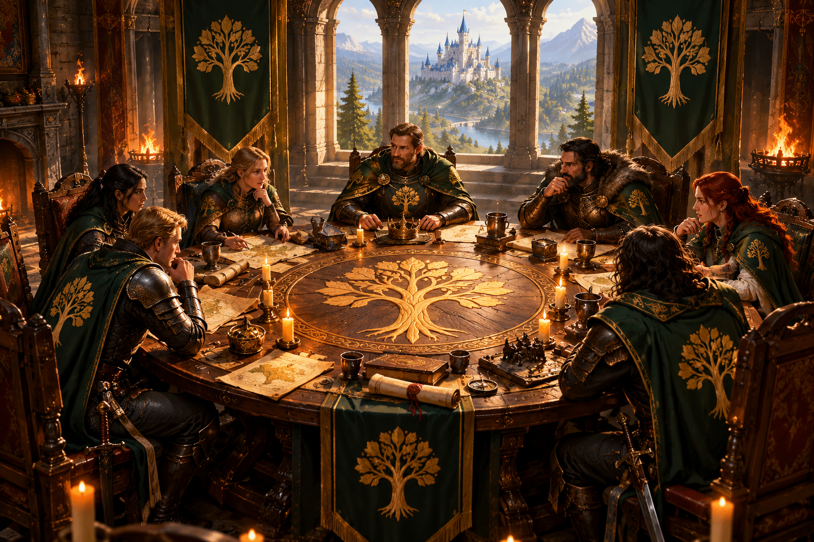

Shared Leadership
Crimson Oak is built around shared leadership. No single person owns the alliance, and no leadership position is intended to be permanent. Every member of the leadership team has a voice. Decisions are discussed together, responsibilities are shared, and leadership positions rotate to keep more people involved in running the alliance.
Chairperson
R6 is a coordinating role, not a throne.
The position rotates between our designated R6 leaders. The active R6 keeps the alliance moving in the same direction, coordinates leadership and handles responsibilities that require the R6 position in-game.
Department Leads
R5s lead specific areas of the alliance and are responsible for making sure their department works.
R5 is also a rotating position. When several R4 members are interested in contributing to the same area, they can rotate through R5 rather than one person permanently holding the position.
Leadership Members
R4 members are part of the leadership team. They participate in discussions, contribute ideas and can take on greater responsibility when they want to.
Ranks give people the tools they need to do a job. They do not make one member more important than another.